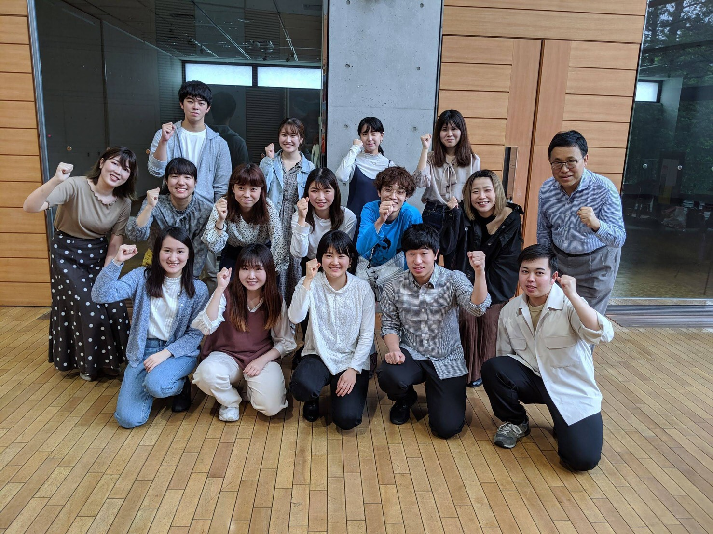
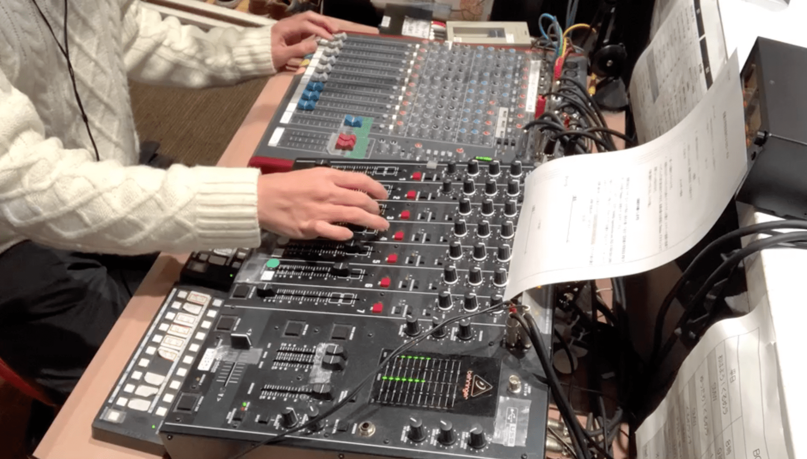

-
大学２・３年｜ラジオ・放送
ラジオ局でのボランティア
- 
- 
-

-
東京都東久留米市のコミュニティFM局「FMひがしくるめ」で、ボランティアスタッフとして生放送に参加しています。
ラジオ局でのボランティア
-
-
2年次の１月から東京都東久留米市のコミュニティFM局「FMひがしくるめ」で、ボランティアスタッフとして生放送に参加し、番組内容の企画・構成や音響・パーソナリティなどの放送業務を担当しています。
これまでに昼の情報番組・夜のオリジナル番組の運営や地域の関連イベントの運営などに参加しました。
-
-
-
昼の情報番組「ゆったりくるめラ」
担当：番組構成 / 音響・パーソナリティ
昼の情報番組では東久留米市を中心とした周辺地域の交通情報やイベント情報などを放送しました。
周辺地域に住んでいないため、初めて触れる新鮮な視点で地域やお店などの魅力を伝えました。 また直近の生活や大学・授業の状況など、学生ならではの意見でコロナ禍における状況を発信しました。
公的な放送に携わるのは初めてだったため、同局・他局の番組を聴き、番組の構成や話題の広げ方、リスナーの聴きやすい音声の調整を何度も研究しました。
-
-
-
学生制作番組「武蔵大学放送会のよるほー！」
担当：番組企画・構成 / 音響・パーソナリティ
番組HP：「武蔵大学放送会のよるほー！」
企画・構成から生放送のパーソナリティ・音響まで、番組すべてを武蔵大学生のみで作り上げる新番組を立ち上げ、２０２０年７月から放送を開始しました。
学生らしい明るく元気な番組を目指し、色々な企画・コーナーを立ち上げて挑戦しています。
２０２１年１月には２時間の新春特番も担当し、開始から約１年経った現在も引き続き放送しています。
-
-
ゼミでの番組制作
-
-
担当：企画構成・音響
大学HP:「ゼミ生によるラジオ放送がスタート」
3年次の学科専門ゼミでは、コロナの影響で例年通りの地方への取材が困難だったため、専門家をゲストに招いて全１２回のラジオ番組を放送しました。 ボランティアスタッフの経験から番組の企画構成やゼミ生への指導を任され、生放送時の音響も担当しました。
「コロナ後の社会の変化と課題」をテーマに教育・政治・経営など多領域の専門家からお話を伺い、学生目線の疑問をぶつけていく番組で、今までに局に無かったアカデミックな番組として好評を頂きました。
-
-
-
放送内容
第１回 「ポストコロナ時代の学校」
第２回 「ポストコロナ時代の働き方」
第３回 「ポストコロナ時代のライブハウス」
第４回 「ポストコロナ時代のCSR」
第５回 「ポストコロナ時代のテレビジャーナリズム」
第６回 「ポストコロナ時代の若者の政治活動・選挙行動」
第７回 「ポストコロナ時代のコミュニティアーカイブ」
第８回 「ポストコロナ時代のイベント運営」
第９回 「ポストコロナ時代の新聞」
第１０回 「ポストコロナ時代のメディア情報リテラシー」
第１１回 「ポストコロナ時代の市民映像」
第１２回 「ポストコロナ時代に向けて（総括）」
-